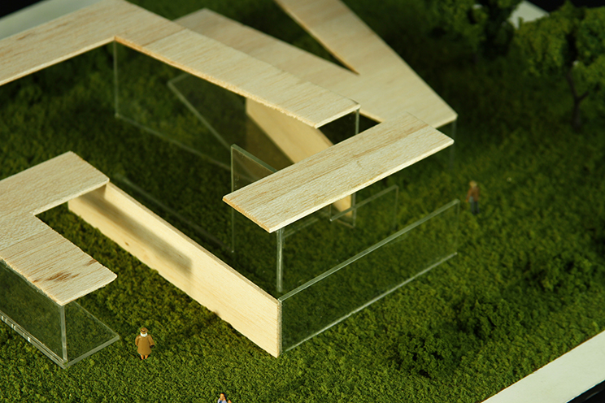
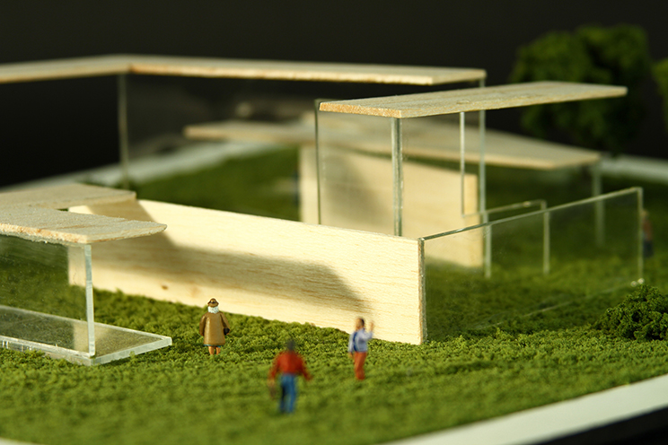
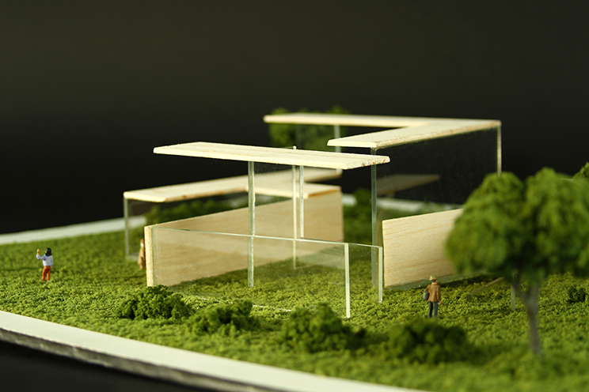

Typographic Monument
A scale model concept for a typography-based monument in honor of Frank Lloyd Wright. I took inpsiration from his famous prairie style houses, and played off of the long, flat architecture that charicterized them. The space is inviting, yet respectful of the natural landscape, as were Wright's houses.
A project for Sophomore Graphic Design Studio at MassArt.